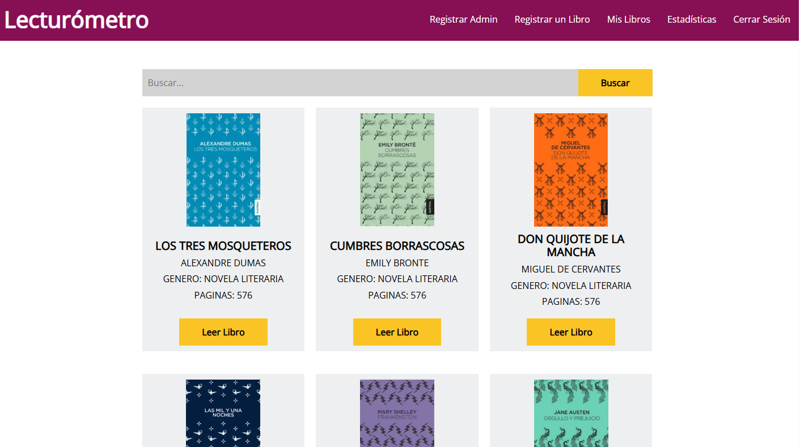

Ingeniero en sistemas computacionales, Me caracterizo principalmente por ser muy autodidacta lo cual me ayuda a asumir retos de una manera muy natural, también cuento con excelentes habilidades de comunicación, manejo de excelentes relaciones interpersonales, así como gestión de trabajo en equipo, destacando una mejora continua en los procesos y brindando excelentes resultados.
| skills | |
|---|---|
| HTML/CSS/JS | Trabajo en equipo |
| PHP/Java | Aprendizaje Continuo |
| Git/Github | Comprometido |
| Linux | Responsable |
| Networking | Flexible |